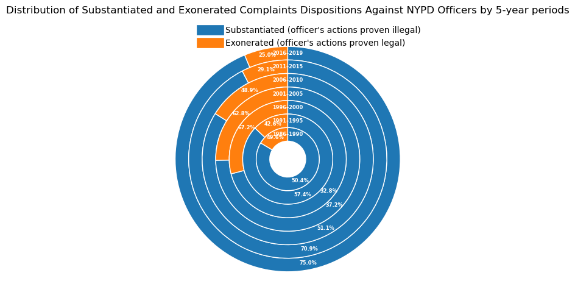
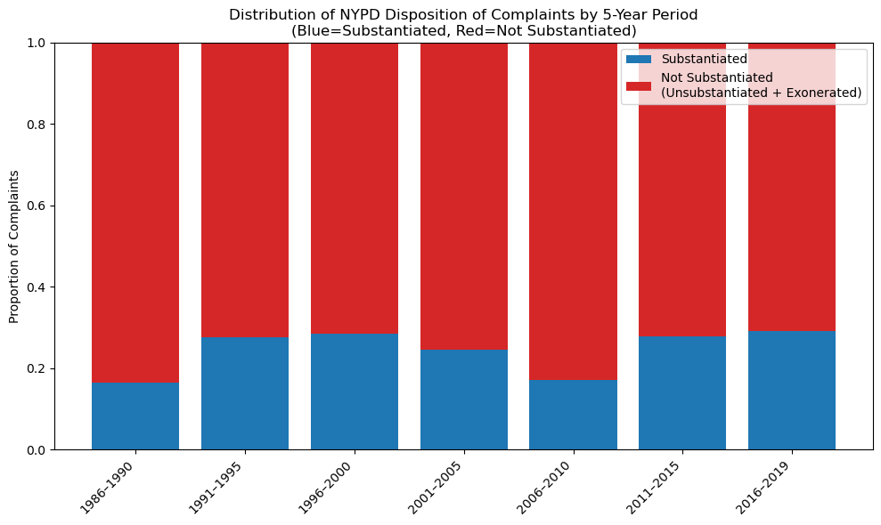

Defending Civilian Rights: NYC becomes stricter with police officer behavior as the CCRB (Civilian Complaint Review Board ) gives out more substantiation towards police officer for misconduct during law enforcement
FOR the Proposition

Design Decisions and Rationale:
- 5-year Binning, Score: 1 — Aggregating data into 5-year periods smooths year-to-year volatility and highlights long-term trends. This grouping is earnest, giving a clear overview without omitting any periods.
- Deceptive Weighting, Score: -2 — Multiplying substantiated counts by 5 before normalization makes the blue slices appear much larger than their true share. This is fully deceptive, as it alters the perceived ratio in favor of substantiation.
- Concentric Donuts, Score: -1 — Using nested rings draws attention inward and conveys a sense of progression. While visually appealing, it makes direct area comparisons difficult, subtly amplifying the illusion of growth.
- Hiding Key Concept, Score: -1.5 — Purposedly ignore the "Unsubstantiated" category, where there is not enough evidence to prove whether the police officer's action was legal or illegal (which consists of the majority). Instead, the chart only looks at officer guilty (blue) or unguility (orange).
- Actual % Labels, Score: 1 — I overlaid the true substantiated percentages atop each wedge. This balances the deception in slice sizing with honest numeric annotation, earning a moderately earnest score.
AGAINST the Proposition

Design Decisions and Rationale:
- 5-year Binning, Score: 1 — Same grouping as the ring chart ensures a fair comparison. This consistent, earnest choice aids interpretation across both visualizations.
- 100% Normalization, Score: 2 — Each bar sums to 100%, clearly showing the true share of substantiated outcomes. This is fully earnest, providing accurate context.
- Color Coding, Score: 0.5 — Blue for substantiated and red for not substantiated leverages intuitive associations. The colors are clear without being misleading.
- Stacked Bars, Score: 1 — A stacked layout lets viewers compare relative proportions directly. This standard, earnest encoding highlights stability in substantiation rates.
- Complete Context, Score: 2 — Including all buckets from 1986 to 2019 prevents cherry-picking. This fully earnest decision ensures no periods are hidden.
Final Reflection
[WRITE FINAL REFLECTION PARAGRAPHS HERE.]